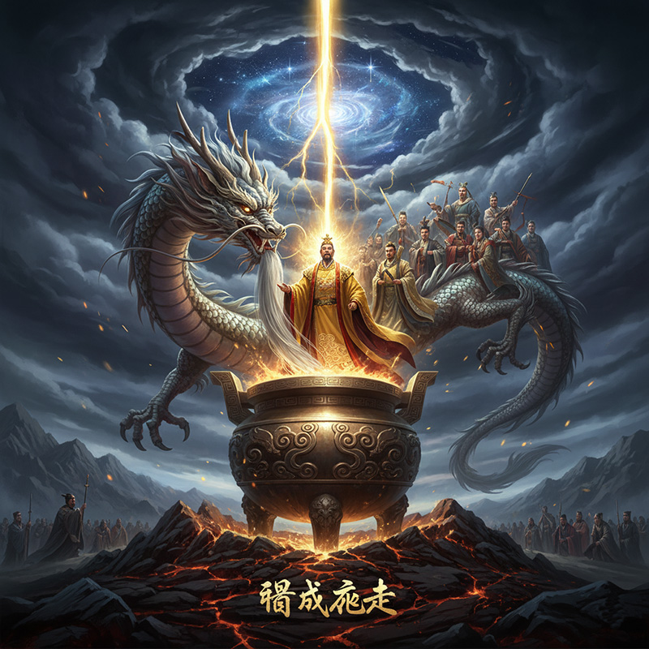

尊号
轩辕氏 / 有熊氏 / 帝鸿氏
地位
五帝之首 / 人文初祖
时代
新石器时代
德行
土德（色尚黄）
姓氏
公孙 (本姓) / 姬 (后改)
都城
有熊 / 涿鹿
“修德振兵，抚万国，度四方，乃地之所载，莫不咸服。”
神祇解读

轩辕降世 · 天命所归
黄帝，姓公孙，名轩辕，少典与附宝之子。传说其母感大电绕北斗枢星而孕，怀胎二十四月而生。他生而神灵，弱而能言，长于姬水，故改姓为姬。因其时代有土德之瑞，土色为黄，故被尊称为“黄帝”，是承载天命、开启华夏文明的 pivotal figure。


鼎成龙去 · 白日飞升
传说黄帝采首山之铜，于荆山之下铸鼎。鼎成之日，有龙髯垂下迎接。黄帝随即率群臣七十余人乘龙登天。这一“鼎成龙去”的传说，不仅标志着其人间功业的圆满，更象征着他从“人王”到“天神”的升华，为后世留下了无尽的遐想与崇敬。
人文之功
👕
始制衣冠
播百谷草木，大力发展生产，并始制衣冠，确立礼仪之始，使先民摆脱蔽体阶段。
🚤
建舟车
发明舟楫与车辆，大大提升了交通与运输能力，促进了各部落间的交流与融合。
🎵
制音律
命大臣伶伦作律吕，校正音阶，为华夏音乐和度量衡体系奠定了基础。
⚕️
创医学
与岐伯等人论医，成就了中医学的奠基巨著《黄帝内经》，开启了系统的医学理论。
📜
作书契
命史官仓颉“取像鸟迹，始作文字”，使记事方式发生革命性变化，文明得以传承。
🗓️
定历法
命大臣大桡作甲子，容成作调历，确立了天干地支纪年法，指导农业生产与社会活动。
💧
穿井
见百物而始穿井，解决了部落的定居饮水问题，是改善民生、促进聚落发展的重要举措。
神祇谱系
解大为的笔记：“黄帝是立维宇宙叙事中的一个关键转折点。如果说伏羲是‘定义者’，女娲是‘守护者’，炎帝是‘培育者’，那么黄帝就是‘秩序的建立者与执行者’。他通过战争与融合，将分散的部落文明强力整合为一个统一的文化共同体。他的一系列创造发明，不再仅仅是解决生存问题，而是系统性地构建一个国家与文明的雏形——从礼仪、制度、文字到历法。他象征着从神话时代向信史时代的过渡，是华夏这艘巨轮真正的‘总设计师’。”